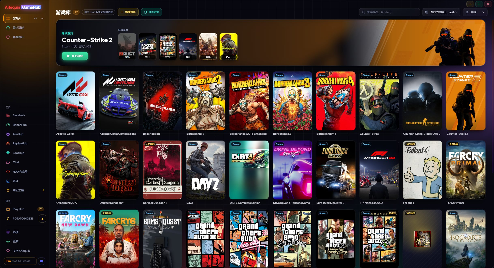

完整的游戏库集中在一处
Steam、Epic、GOG、Xbox、Ubisoft、EA、Battle.net、Amazon、Rockstar，以及没有启动器的游戏，全部在一起。
GameHub 会查看你电脑上已有的内容：每个商店启动器保存的文件夹和文件。这样它就能找到你已安装的游戏，以及你拥有但尚未安装的游戏，并附上封面和你的游戏时长。即使你从游戏自己的启动器打开游戏，时长也会被统计。
在侧边栏点击“游戏库”，会显示你的各个商店以及每个商店中的游戏数量（即使某个商店应用已安装但还没有游戏，也会显示）。你可以按名称、最近游玩、时长或大小排序，即时搜索，并查看最近玩过的游戏。
没有启动器的游戏（模拟器、itch.io 游戏……）可以通过“添加游戏”按钮添加，或者告诉 GameHub 你存放独立游戏的文件夹，它会自动找到。它也会为其他商店的游戏、手动添加的游戏或已从商店下架的游戏查找 Steam 官方封面；如果没有，就使用游戏的图标，你也可以随时设置自己的图片。
你在多个商店或同一文件夹中拥有的同一款游戏只会显示一次。如果 Steam 正在更新某个游戏，你会在它的卡片上看到（“正在更新 45%”或“待更新”）。
Steam 更新和 Epic 下载（安装或更新）会在卡片底部原本“开始游戏”的位置显示真实进度百分比、速度和剩余时间；点击即可打开 Steam 或 Epic。下载停滞时会显示“已暂停”。
新增商店：Riot（League of Legends、VALORANT、TFT…）、HoYoPlay（原神、星穹铁道、绝区零…）、Wargaming（World of Tanks…）、Ankama（Dofus、Wakfu…）和 Gameforge（Metin2、NosTale…），并显示 Dofus 每个角色的时长。GOG Galaxy 的主机游戏（PlayStation、Nintendo）有自己的分区并可隐藏；在 选项 → 游戏库 中可以去掉不需要的商店，并选择它们在侧边栏中的顺序。
如果混进了不是游戏的东西（程序、服务器……），移除它，GameHub 就会学习。你可以在 选项 → 游戏库 中恢复。
它从不索要任何商店的密码：开始游戏时，它会用各自的启动器打开每个游戏，就像你自己打开一样。
即使没有安装，你的 Xbox / Microsoft Store 和 Ubisoft 游戏也会显示，Game Pass 游戏可以隐藏。系列游戏按发售日期排序，封面和背景保存在你的电脑上：立即显示，没有网络也能显示。
使用方法
- 打开它并等待几秒钟：你的游戏会自动出现。
- 双击或点击“开始游戏”按钮（封面下方）即可打开游戏。
- “显示 N 款未安装的游戏”会同时显示你未安装的游戏。
- “查找游戏”会立即重新检查你的商店。
- Dofus 角色按服务器区分：关闭游戏时 GameHub 会判断你在哪个服务器玩或询问你，卡片按服务器分组，还可以把时长转到其他服务器。
